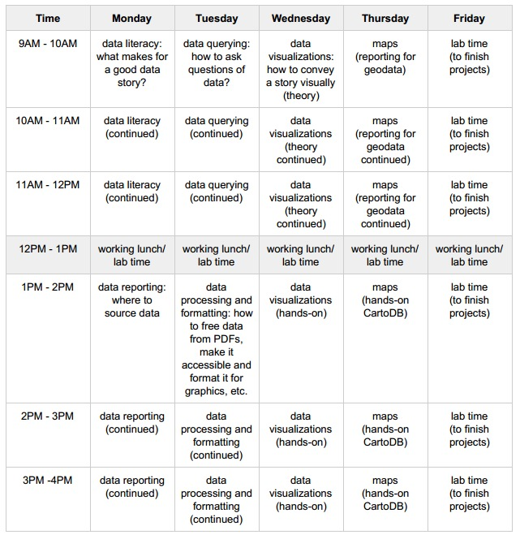

Schedule
Monday: Data literacy and data reporting
Tuesday: Data processing and querying
Wednesday: Data viz
Thursday: Mapping
Friday: TBD/Lab time
Instructors
Abraham Hyatt
abrahamhyatt@gmail.com
@abrahamhyatt
http://abrahamhyatt.com
Lam Thuy Vo
lam.vo@aljazeera.net
http://lamthuyvo.com
@lamthuyvo
+1 (347) 977 3784
Description
Aside from a reporter, newsroom teams may include one graphic designer or web producer, focused on visualizing data. Depending on the medium, teams may also include a photographer. At least five groups will be selected to participate. When selecting participants, the club will consider the strength of proposals as well as diversity in terms of geographic location, size of media organization and medium. Alaska Press Club will pay for travel associated with this fellowship.
Applicants must have support and approval from newsroom management. Student applicants must have support from a journalism professor. Newsrooms must be willing to pay participants their regular salaries during the fellowship week.
Selected participants must identify one set of data to explore in-depth and must complete preliminary interviewing that indicates why the data set is important before instruction begins on Jan. 5, 2014. Proposals that connect data with human stories are encouraged.
Selected participants must communicate with their immediate supervisor regularly during the training about story development. News teams and Alaska Press Club grant a royalty-free, perpetual, non-exclusive, non-transferrable license to the Alaska Community Foundation, and its Recover Alaska partners, for all published stories and materials generated from the work completed as a result of this fellowship. Applicants must have a publication plan for stories that are produced as a result of the training, but final approval for publication is at the discretion of newsroom managers. Alaska Press Club and project partners will not attempt to exert editorial control over any work produced as a result of this fellowship.
Any data visualization software purchased for this training will be available to fellows and their newsrooms for one year. Alaska Press Club also has limited funds to cover any fees associated with data extraction.